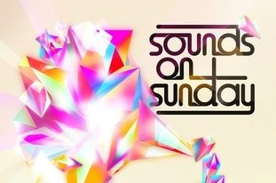

Sounds on Sunday nods to the old school with opening party


Interest spiked last month when it was revealed that Sydney institution Sounds On Sunday would be resurrected in time for the start of summer later this year, and the lineup announcement has similarly grabbed everybody’s attention, with a raft of veterans booked to play the Greenwood’s famous courtyard space at the opening on Sunday 7 October 2012.
Sydney house icons Illya and Matt Roberts will be going back to back on four CDJs, two mixers and two turntables, joined by fellow familiar faces Shamus and James Taylor. Elsewhere in the infamous Chapel, the space’s heritage with trance, progressive and techno will be given a suitable makeover by the Bare Essentials crew, with Carlos Zarate and Sam Roberts on hand to provide the tunes. ‘Four Rooms, Four Genres’ is the promise.
“100s of hours have gone into the musical structuring of set times, genres and what you hear and when,” the organisers claimed with the announcement. “You will notice on the day exactly what I am talking about.”